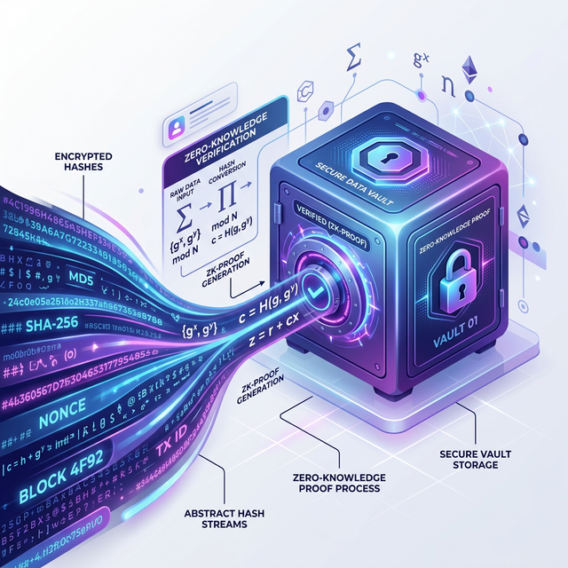
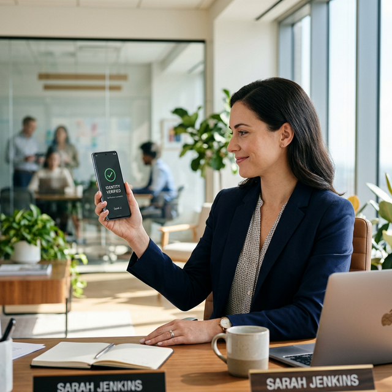

Identity Security,
Engineered from First Principles.
BrillSign verifies signer identity using cryptographic proofs — never storing raw PII. Our zero-knowledge architecture ensures privacy, compliance, and court-grade attribution in every signature.
The Identity Trust Chain
Every signature passes through a 4-stage cryptographic identity pipeline — from challenge to portable trust.
Identity Challenge Issued
When a signer opens a document, BrillSign issues a cryptographic identity challenge. The signer must prove who they are before the signature can proceed.
Biometric / OIDC Proof Collected
The signer authenticates via biometrics (Face ID, fingerprint), a federated identity provider (OIDC/SAML), or an external KYC integration. Multiple factors are fused into a single proof.
Cryptographic Hash Sealed
Raw identity data is immediately discarded. Only a zero-knowledge cryptographic hash is retained — proving identity without exposing any personal information. Full GDPR compliance by design.
Trust Token Minted
A portable, reusable trust token is created for the signer. Future signing sessions skip the full verification — the token proves identity instantly across any BrillSign-powered document.
Three Pillars of Identity Security
Privacy, strength, and portability — the core principles behind BrillSign's identity layer.
Zero-Knowledge Privacy
BrillSign never stores raw personal data. Our identity proofs use zero-knowledge cryptographic hashes — we can prove you are who you claim to be without ever seeing or retaining your sensitive information.
- PII is cryptographically hashed, never stored in plain text
- GDPR Article 25 compliant — privacy by design and default
- Data minimisation enforced at the protocol level

Multi-Factor Identity Binding
Every signature is bound to a composite identity proof built from multiple authentication factors — biometrics, device attestation, and federated IdP tokens — fused into an unbreakable cryptographic seal.
- Hardware-backed biometric authentication (Face ID / Touch ID)
- Device attestation via TPM/Secure Enclave
- Federated IdP integration (OIDC, SAML 2.0)

Portable Trust Tokens
Once verified, signers receive a reusable trust token. No repeated KYC, no account creation, no friction. The token travels with the signer and is accepted across any BrillSign-integrated platform.
- One verification, unlimited future sessions
- Cross-platform and cross-organization portability
- Cryptographically bound to the signer's identity proof
Built for Enterprise Compliance
BrillSign's identity layer meets and exceeds global regulatory standards.
eIDAS
Qualified Electronic Signature (QES) ready. Identity proofs meet Advanced and Qualified signature standards across 27 EU member states.
GDPR
Zero-knowledge by design. No raw PII is stored, processed, or transmitted — full Article 25 compliance with data minimisation.
NIST FIPS 140-2
Cryptographic modules validated at Level 3. Hardware-backed key storage ensures identity proofs cannot be extracted or replayed.
SOC 2 Type II
Continuous monitoring of security, availability, and confidentiality controls. Audited annually by independent third parties.
ISO 27001
Information security management system certified. Systematic approach to managing sensitive identity data and cryptographic assets.
Protect Every Signature with Verified Identity
Eliminate identity fraud, ensure non-repudiation, and stay compliant — without the account friction.
Get Started